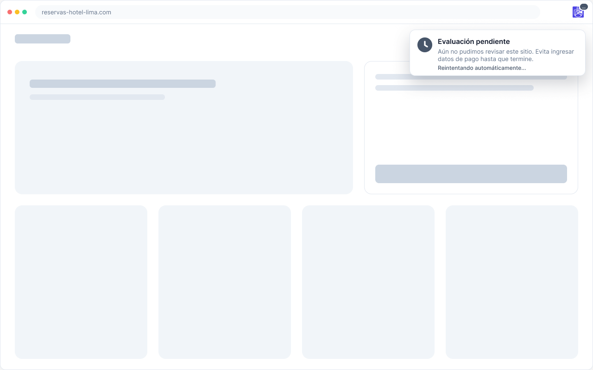
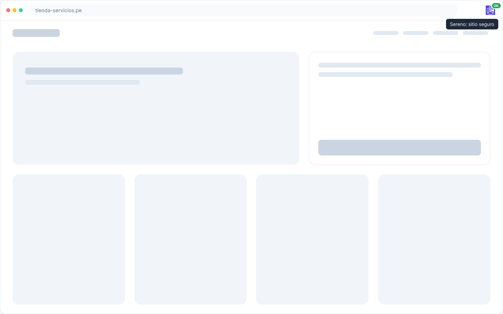
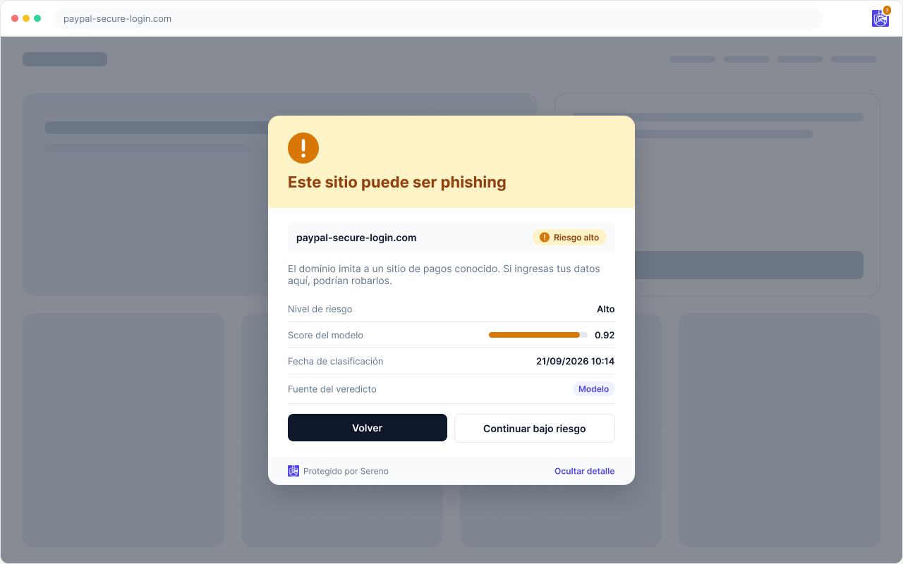
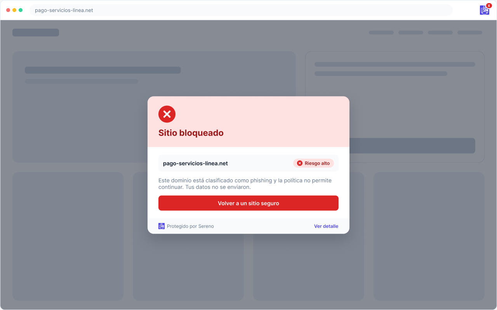

-
Abres un enlace
Desde un correo, un SMS o un anuncio. Sereno toma la dirección antes de que la página cargue. Si la respuesta tarda, te lo dice y te pide no ingresar datos de pago todavía.
Chrome, Manifest V3
-
Si es seguro, no te interrumpe
El ícono de la barra se pone verde y la página carga como siempre, sin abrir ninguna ventana.
Veredicto en menos de 200 ms (meta)
-
Si parece phishing, te detiene
El aviso aparece sobre la página, antes de que escribas tu tarjeta o tu clave. Tú decides: volver o continuar bajo tu responsabilidad.
Aviso dentro de la pestaña -
Te explica por qué
Con un clic ves el nivel de riesgo, el puntaje del modelo, la fecha y si el veredicto vino del modelo o del caché.
Detalle del veredicto
-
Y bloquea lo que la política prohíbe
Si un administrador marcó el dominio como bloqueado, no hay botón para continuar. Tus datos no llegan a enviarse.
Política por dominio